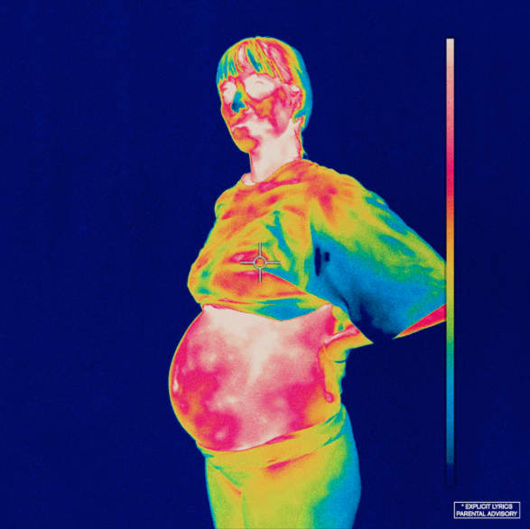

Iridescence Review

iridescence is a ride. It demands your attention from the first moment of the first track, NEW ORLEANS, with its
anxious, droning instrumental (a la Death Grips) seething beneath a barrage of urgent verses delivered by members
of the 14 piece hip-hop collective (and all-American boy band) BROCKHAMPTON. For the most part, it rolls nimbly
through its 15 song tracklist, each a unique display of the group’s musical and lyrical prowess.
Stylistically, iridescence falls somewhere just left-field of radio-friendly rap, with strokes of the glitchy, noisey
music of the aforementioned Death Grips, and a dash of that *NSYNC-esque boy band sound in certain places. The production
emphasizes discord, often filling the empty sonic space with distorted voices and computerized grit. They bounce easily
between all these styles, from heavy, rap-centered tracks like BERLIN, DISTRICT, J’OUVERT, and VIVID, to lighter ones
like THUG LIFE and SOMETHING ABOUT HIM.
Thematically, iridescence is a reaction to the fame that the Saturation trilogy garnered them, and as a result, it feels
more mature and genuinely introspective than any of their previous work. However, perhaps due to the size and diversity of the group,
it’s more of a collage than a cohesive narrative. But even if it does feel a bit scattered, it still resonates with the
listener. One track in particular that stands out as a centerpoint is TAPE, in which group-leader Kevin Abstract raps,
defeated and deadpan, about his feelings of inadequacy, his failing family relationships, and how fame has changed
him. What really brings the song together though is the fractured, skittering drum beat that spirals up and down in the
mix in time with Abstract’s detached breakdown.
But iridescence is not without its faults: Even upon first listen, it is obvious that SAN MARCOS is the natural
conclusion to the album, and yet it is succeeded by two more tracks, the utterly fantastic TONYA and the utterly
mediocre FABRIC. The latter especially hurts the flow of the album, and is an all around weak closer. In my
[admittedly not so] humble opinion, TONYA should have been placed second to last, with SAN MARCOS as the final track
and FABRIC relegated to b-side status.
Regardless, iridescence is an outstanding and passionate album that takes BROCKHAMPTON’s sound and style into territory
previously unexplored by the band, one marked by increased sonic experimentation and introspection.
7.5/10
Best: NEW ORLEANS, BERLIN, SOMETHING ABOUT HIM, WEIGHT, DISTRICT, TAPE, VIVID, J’OUVERT, SAN MARCOS, TONYA
Worst: HONEY, FABRIC, LOOPHOLE
To listen to iridescence on youtube, click here
To see my track rankings or this album, click here.